02-120 Programming for Scientists · Final project
How do bacteria decide together, and what emerges when they do?
A build journal by Michaela Xie (with Claude Code). We re-built a published quorum-sensing (QS) model, proved our copy matches it, found where it falls short, and extended it to individual cells that eat, starve, share food and signal, rendered as videos.
Background
The starting point: a published model
Kuttler & Maslovskaya (2022), Computer-assisted modeling of quorum sensing in a bacterial population exposed to antibiotics, Front. Appl. Math. Stat. 8:951783. We used it as a positive control: our code has to reproduce it before we trust anything new.
What quorum sensing is
- Bacteria release a small signal molecule (AHL).
- When enough cells are close together, the signal crosses a threshold.
- Then cells switch behavior together: make more signal, form biofilm, or become virulent.
- The organism here is Pseudomonas putida, which also makes lactonase, an enzyme that destroys its own signal.
What the paper models
- Two chemicals on a 100 × 100 µm surface: AHL (U) and lactonase (L). Each one spreads, decays and is produced.
- A switch: above the threshold, AHL production jumps about 10×, and lactonase (the brake) turns on slightly later.
- Colonies as round blobs that appear at random spots and grow along an S-shaped (logistic) curve.
- An antibiotic pulse that shrinks the colonies.
- Solver: a fast, stable grid method (ADI with the Thomas algorithm).
The two equations, in words
AHL (the signal)
- spreads quickly (diffusion 100 µm²/h)
- decays very slowly on its own (half-life ~125 h)
- is destroyed by lactonase, the only place the two equations touch
- is produced by colonies: a little always, much more above the threshold
Lactonase (the brake)
- spreads slowly (1 µm²/h, it's a large protein)
- decays fast (half-life ~1.4 h)
- is produced only when AHL is above a slightly higher threshold (shifted by ε)
Paper vs. this project
What we kept, what we changed
| Paper | This project | |
|---|---|---|
| Language | Matlab, with a GUI | Python packages with tests, scripts and videos |
| Chemistry | AHL + lactonase | Identical, verified to a difference of exactly 0.0 |
| Bacteria | Round blobs with a prescribed density curve | Stage 1: individual cells that eat, divide, starve and move |
| Food | Not modeled (growth is fixed) | A nutrient field that diffuses in and gets eaten |
| Does QS change behavior? | No. Signal is a readout only | Yes, optionally: QS can speed growth (Q7), and cells can share food or relay a starvation signal |
| Checking | Stability test (Fig. 4) | Stability test + exact-match control + multi-seed comparison + 19 unit tests |
| Output | Snapshots | Figures + videos of every 0.1 h of the simulation |
How we got here
- Oct 30Set up the build journal. Every Claude Code session is saved in
journal/. - Oct 30Read the paper and broke it into 10 steps, including its pros, cons, scope, and what it can't explain.
- Oct 30Quiz on the model. 7 questions, graded, with plain-language answers (below).
- Oct 30Built
qs_model/: one function per step of each equation, every function documented (input / output / steps / types / role). - Oct 30Positive controls: deterministic + statistical comparison with the paper's numbers.
- Oct 30Q7 extension: QS feeds back on growth.
- Nov 13Refocused on emergence: built
emergence/with individual cells, nutrients, food-sharing networks and a relayed starvation signal, rendered as videos.
Checking understanding before writing code
The quiz: questions, my answers, the real answers
No code was written until I could explain each piece. Click a question to open it.
Q1 Which term makes the AHL and lactonase equations depend on each other? mostly right
My answer
- The γL→U·L·U term, where lactonase destroys AHL. I also said production depends on both.
Correct answer
- Right term. But production depends only on AHL, not on lactonase.
- The term multiplies two unknowns, so it's nonlinear.
- The solver handles it by holding lactonase fixed while solving AHL, in the order L → U → L.
In the code
solver.ahl_loss_rate,solver.coupled_half_step; figure 11 shows AHL with vs without this term.
Q2 What happens to the switch if ε = 0, or if ε is large? half right
My answer
- ε = 0: lactonase would overwhelm AHL. Large ε: lactonase production would be very slow.
Correct answer
- Large ε: correct. The brake turns on late, so AHL climbs higher first.
- ε = 0: the brake turns on at the same level as the accelerator. That's a modest change, not a collapse, because ε is small (5·10⁻⁹ vs a threshold of 7·10⁻⁸).
In the code
production.lactonase_production; figure 01.
Q3 Why can the solver use the Thomas algorithm? needed explaining
My answer
- It's faster, but I wasn't sure why it fits this problem.
Correct answer
- Diffusion links each grid point only to its neighbors. In 2D that's 4 neighbors, which makes one big messy system.
- ADI handles one direction at a time, so each grid row becomes a simple chain where every point touches only 2 neighbors.
- Thomas is a shortcut built for exactly that chain shape. Its cost grows only in proportion to the row length.
- Treating one direction implicitly also keeps the step stable.
In the code
solver.thomas_solve,implicit_x_half_step; figure 03.
Q4 Colony radius and density both mean "how many bacteria". Which does what? mostly right
My answer
- Density controls how much is produced; radius controls where.
Correct answer
- Correct. One nuance: a bigger radius also covers more area, so it adds some amount as well.
In the code
production.source_terms,colony_footprint; figure 02.
Q5 After an antibiotic dose, why does lactonase collapse but AHL stay? mostly off
My answer
- AHL diffuses 100× faster, so it can "run away" from the antibiotic.
Correct answer
- The antibiotic acts on bacteria, and it's the same everywhere, so there's nothing to run from.
- The key rows of the table are the decay rates: lactonase halves in ~1.4 h, AHL in ~125 h.
- Once production stops, lactonase disappears fast and AHL lingers. The cause is a timescale difference, not resistance.
In the code
params.half_life; figure 08.
Q6 Why can't the paper's Fig. 5 be reproduced exactly? What is the strict control? off
My answer
- Antibiotic diffusion depends on temperature and environment.
Correct answer
- In this model the antibiotic doesn't diffuse at all; it's a fixed function of time.
- The real reason is randomness: colony positions, the number of starting colonies, and new colonies are all drawn at random.
- Strict control: one fixed colony at the center (radius 10 µm, full density, no randomness). That's the paper's own Fig. 4 setup.
In the code
controls.deterministic_control,statistical_control; figures 09–10.
Q7 How could QS influence the bacteria, not just be a readout? implemented
My answer
- Still figuring it out.
Correct answer (and what we built)
- Each colony reads the AHL at its center and passes it through the same threshold switch it uses for production.
- The result (0 to 1) multiplies the growth rate: up to 2× faster when QS is fully on.
- That closes a loop: more signal → faster growth → bigger colony → more signal.
- A DNA-uptake counter is recorded too, as a hook for the "collective DNA uptake" question in the proposal.
In the code
qs_model/feedback.py; figure 12.
Re-building the paper
Figures from the reproduction
Each figure is tied to a step of the model or a quiz question.
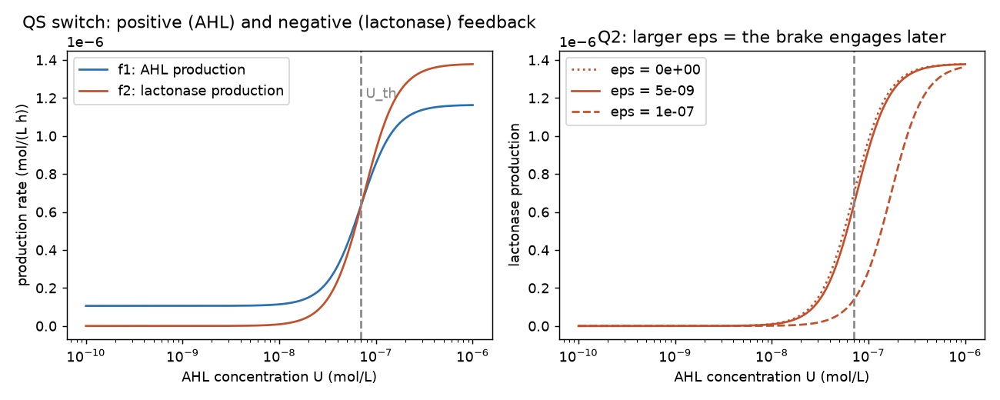
- AHL production jumps at the threshold.
- Lactonase (the brake) turns on slightly later; a bigger ε delays it more.
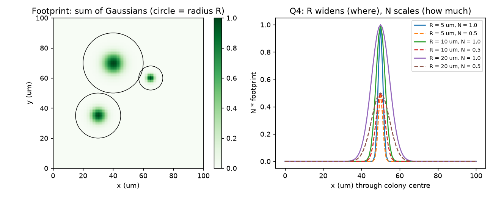
- Each colony is a soft blob; the radius sets its width.
- Density scales the height.
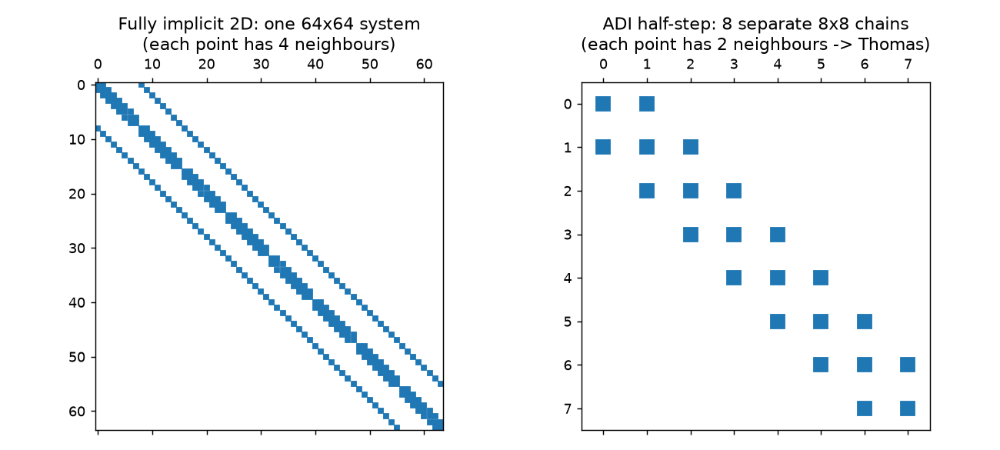
- Left: one big tangled system. Right: many small chains.
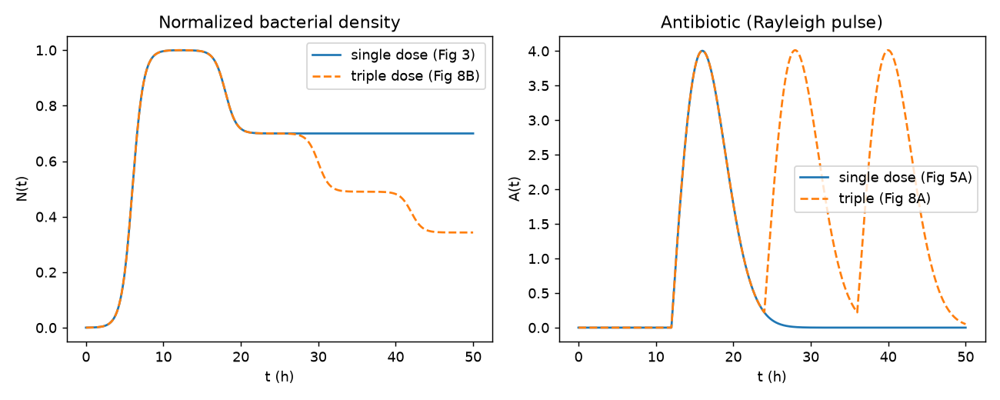
- Population rises, then drops ~30% after each dose.
- The antibiotic peaks 4 h after dosing.
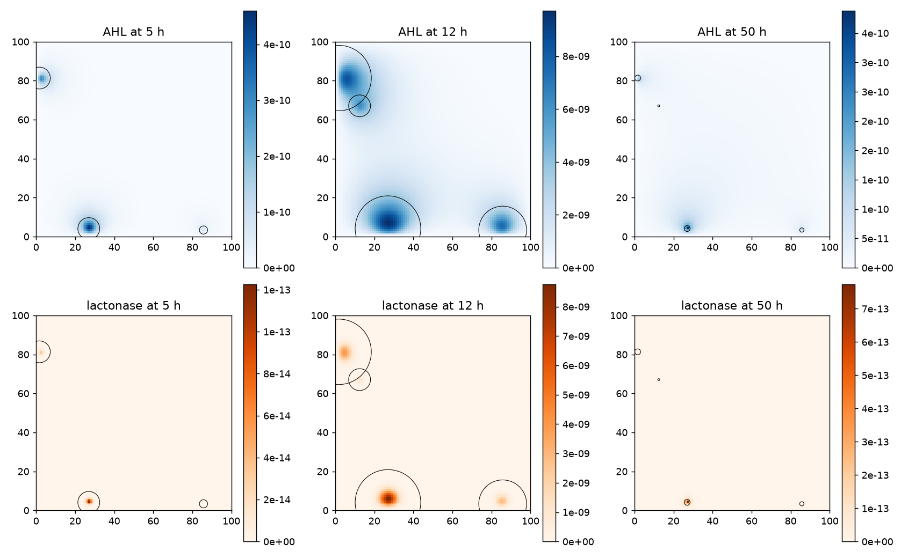
- AHL (blue) and lactonase (orange) around colonies (circles) at 5, 12 and 50 h.
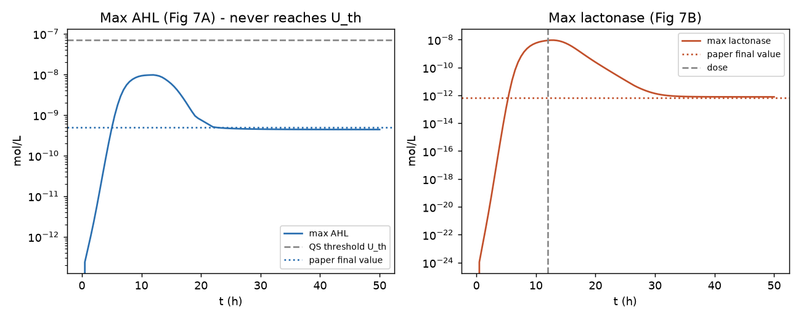
- Our final AHL: 4.88·10⁻¹⁰ (4-seed mean); the paper's: 4.89·10⁻¹⁰.
- AHL never reaches the QS threshold (dashed line).
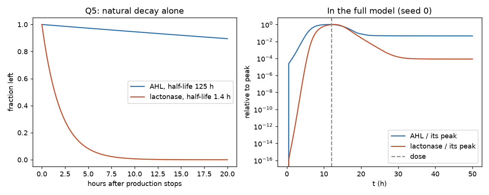
- Lactonase is gone within hours; AHL lasts days.
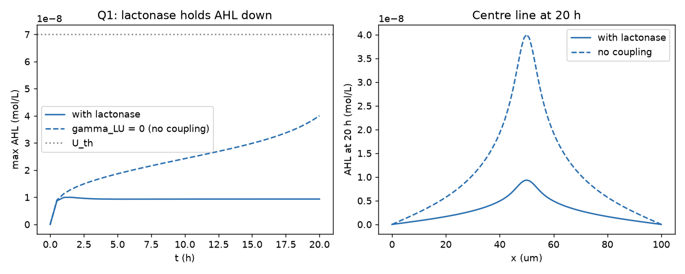
- Without lactonase (dashed), AHL gets ~4× higher.
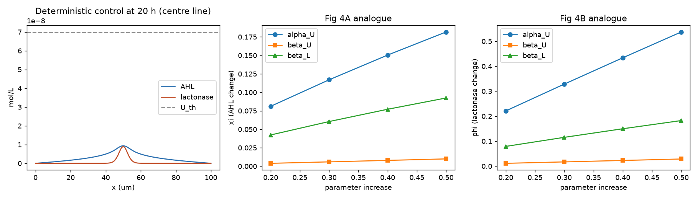
- One fixed colony, no randomness.
- Raising production 20–50% changes results smoothly, matching the paper's Fig. 4 stability test.
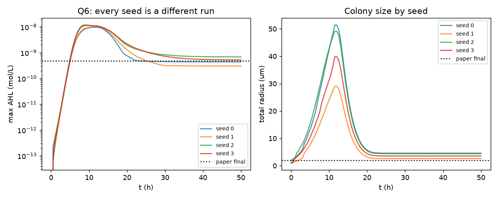
- Every random seed gives a different run, so we compare averages to the paper.
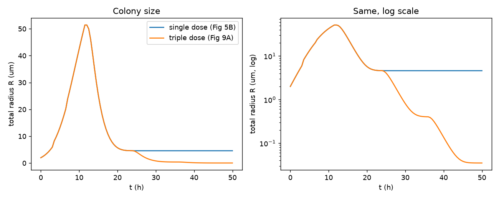
- One dose shrinks colonies ~10×; three doses nearly wipe them out.
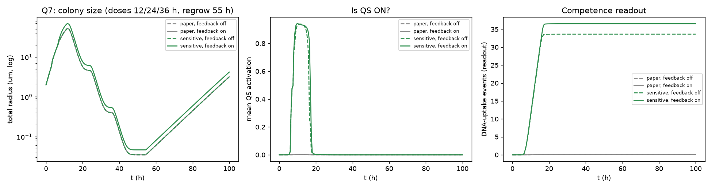
- Paper strain: feedback changes nothing, because QS never switches on.
- Sensitive strain: colonies are 33% bigger before treatment.
Going beyond the paper
Individual cells, food, and emergence
The paper's colonies are blobs that can't run out of food. So we built a second model where each dot is a cell cluster that eats nutrient, stores food, divides, starves, moves toward food, and links to its neighbors. The paper's chemistry runs underneath, unchanged.
Stage 0: control
- The paper's model, animated.
- Our new solver matches the original exactly (difference 0.0).
(a) Food sharing
- Cells pass food to hungrier neighbors along the contact network.
- Do supply routes form?
(b) Signal pause
- Starving cells emit a signal; fed cells relay it and eat less.
- Based on B. subtilis biofilms (Liu et al. 2015; Prindle et al. 2015).
- Top left: control. Top right: (a) sharing. Bottom left: (b) pause + relay. Bottom right: both.
- Each tile shows the cells (colored by subnetwork) and each cell's food (red = starving).
- Figure 06, every 0.1 h for 50 h. The antibiotic is added at 12 h.
- Around 20 h the relayed signal (panel E) floods the colony, and nutrient (C) returns to the center.
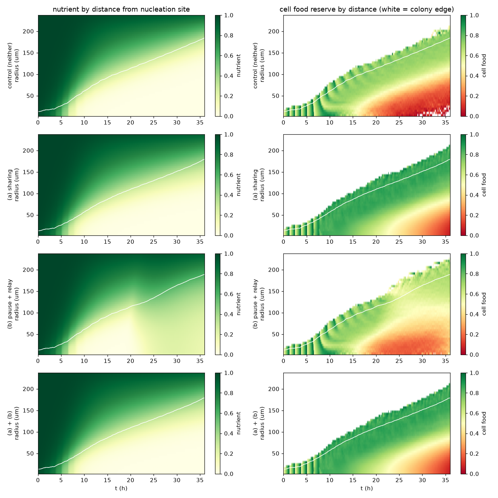
- Left: nutrient. Right: cell food. White line: colony edge.
- Row 3 (pause): the green flood at ~20 h is nutrient returning to the starved center.
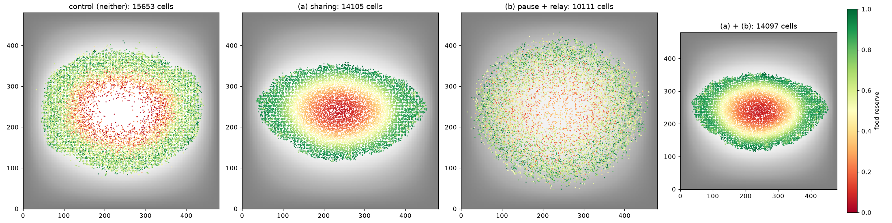
- Control: a hollow ring. Sharing: one compact colony with a hungry core. Pause: scattered but fed.
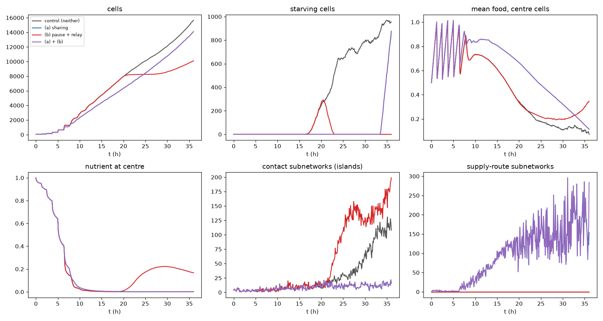
- Cells, starving cells, center food, center nutrient, islands, supply routes.
What we learned
Findings
Reproduction
- Matches the paper's printed values: final AHL 4.88 vs 4.89 (×10⁻¹⁰ mol/L).
- 7 of 8 statistical checks pass. The one miss: our lactonase peaks 0–1 h after the dose, the paper's before.
- The paper's "QS stays high after treatment" refers to AHL that is already far below the switch point.
Q7: QS driving growth
- Matters only when QS can switch on (a more sensitive strain).
- Then colonies grow 33% larger before treatment and recover about 30% larger.
Emergence in the cell model (one seed)
- A starved center appears by itself: edge cells eat first.
- Sharing delays starvation (first starving cells at ~30 h vs ~18 h) and keeps the colony connected (16 vs 108 islands), but leads to a synchronized collapse.
- The relayed signal brings nutrient back to the center but stops growth for everyone. Without the relay, it does nothing.
- Mechanisms interfere: sharing hides the starvation that would trigger the signal.
- Symmetry breaking: colonies grow lopsided, in a direction set by chance.
Honest caveats
- Emergence results come from a single random seed; they need repeats.
- Nutrient, movement and sharing parameters are assumptions, not measurements.
- No branching patterns yet at these settings.
- The early sawtooth in the plots comes from identical starting cells dividing in lockstep.
Where this goes
Next steps
Make QS matter
- Run with a strain whose QS can switch on, and let QS boost movement.
Look for branching
- Poorer nutrient and slower spreading should produce finger-like branches.
Repeat with many seeds
- Turn the single-run effects into measured ranges.
Antibiotic resistance
- Drug soaking in from outside, QS-triggered tolerance, shared protective enzymes, and resistance picked up from DNA.
Network architectures
- The original question: hierarchical vs parallel QS circuits.